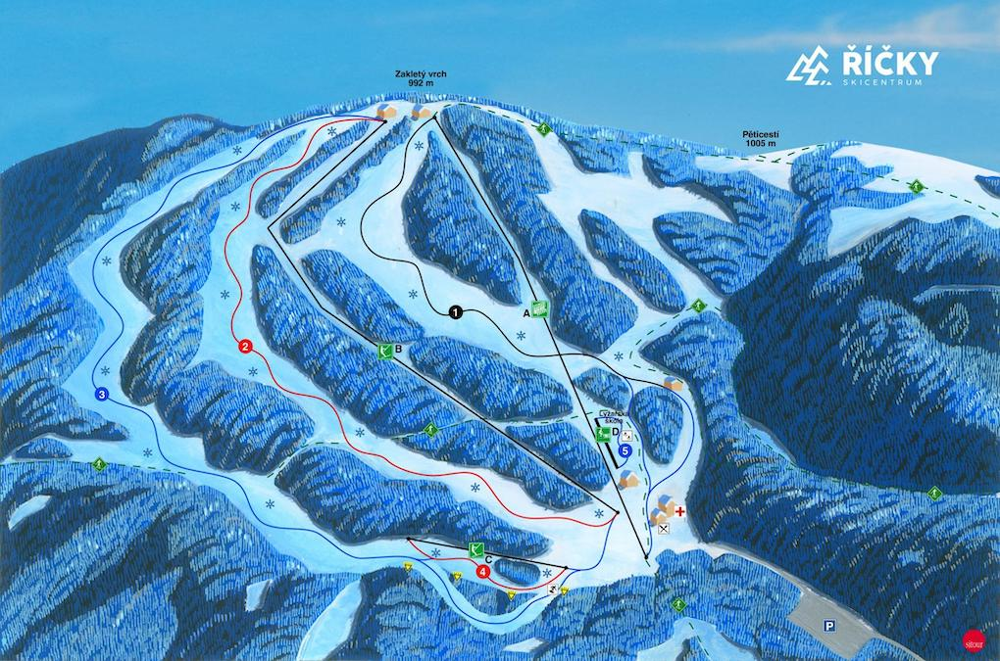

Skicentrum Říčky
Ski centrum Říčky se nachází v Orlických horách na jihovýchodní straně vrchu Zakletý. Díky své nadmořské výšce, moderní lanovce, výhodné orientaci sjezdových tratí, jejich délce a systému technického sněhu se jedná o nejlepší středisko sjezdového lyžování v Orlických horách. Areál se nachází na jihovýchodní straně vrchu Zakletý v nadmořské výšce 740 – 992 m n. m. Díky své nadmořské výšce, moderní lanovce, výhodné orientaci sjezdových tratí, jejich délce a rozmanitosti a systému technického sněhu se jedná o jedno z nejlepších středisek sjezdového lyžování v Orlických horách a zároveň jedno z předních středisek v České republice. Areál disponuje zmodernizovaným zasněžovacím systémem, který umožňuje produkci sněhu i při vyšších teplotách. Areál disponuje 6sadačkovou lanovou dráhou s bublinou a nabízí tři sjezdové tratě různých obtížností, vhodné jak pro rekreační lyžaře, tak i velmi zkušené a náročné sjezdaře. Ski centrum je vybaveno výkonným zasněžovacím systémem a nejmodernější technikou na úpravu sjezdových tratí. Pohodlný odbavovací systém, prostorná lyžařská škola s pohyblivým pásem, kolotočem a dalšími pomůckami pro efektivní výuku jízdy na lyžích nebo snowboardu.

Ski centrum disponuje čtyřmi sjezdovkami, jednou lanovkou a dvěma vleky
- Slalomka – (černá sjezdovka) délka cca 1000 m, pro zkušené, sportovní lyžaře. Tato sjezdovka je v průběhu zimy celá průběžně zasněžována umělým sněhem. Sjezdovka má homologaci FIS pro Slalom a Obří slalom.
- Sjezdovka – (červená) délka cca 1200 m, pro středně zkušené lyžaře. Tato sjezdovka je v průběhu zimy celá průběžně zasněžována umělým sněhem. Sjezdovka má homologaci FIS pro Obří slalom.
- Loučky – (modrá) délka cca 1500 m, pro začátečníky a rodiče s dětmi, krásné rodinné lyžování.
- Můstek - (červená) délka cca 350 m, večerní lyžování, Snowpark. Tato sjezdovka je v průběhu zimy celá průběžně zasněžována umělým sněhem.
- Lanovka ("1. Orlická dráha") – Poma Unifix – čtyřsedačková lanovka s rozběhovým pásem, délka 1200 m, max. kapacita 2400 osob/hod., rychlost 2,6 m/s, délka jízdy 7min 43 s.
Večerní lyžování na Můstku
Ski centrum dále poskytuje na sjezdovce Můstek večerní lyžování, a to v pátek a sobotu od 17:00 do 20:00 hod., vyuýít můžete i malý snowpark. Provozní doba je každoročně zpravidla od 1.12. do Velikonoc a to od 8:00 hod do 16:00 hod. Na Nový rok, tedy 1.ledna, je provoz od 9:00 hod.
Lyžařská škola
Přímo ve středisku působí lyžařská škola, která je vybavena malým provazovým vlekem vhodným pro výuku dětí. Dále je zde ski servis, půjčovna lyžařského vybavení a úschovna. Vrch Zakletý je ideálním výchozím místem běžkařů na celý hlavní hřeben Orlických hor. V blízkosti střediska (cca 150 m) lze zdarma zaparkovat na parkovišti, které má kapacitu 300 osobních automobilů a 15 autobusů.
Kam za běžkami
Vrch Zakletý respektive křížení turistických cest Pěticestí, které je opodál, je zároveň ideálním výchozím místem běžkařů na celý hlavní hřeben Orlických hor.V okolí Ski centra jsou upravovány běžecké tratě v délce minimálně 36 km jak pro klasický styl, tak i pro bruslení.
Noční pochody
Obdobně jako minulý rok se i v nadcházející zimní sezóně budou pořádat Pochody po setmění. Při oblíbené večerní aktivitě se návštěvníci seznámí s horskou vesnicí Říčky, jejími obyvateli a zdejšími zvyky i tradicemi. Ti, kteří se do večerního dobrodružství zapojí, ochutnají místní speciality a vyzkoušejí nevšední zimní sporty.
